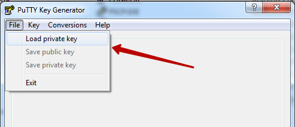
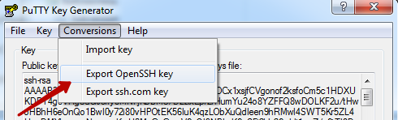
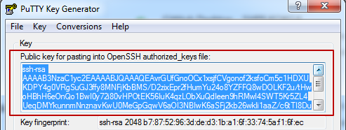
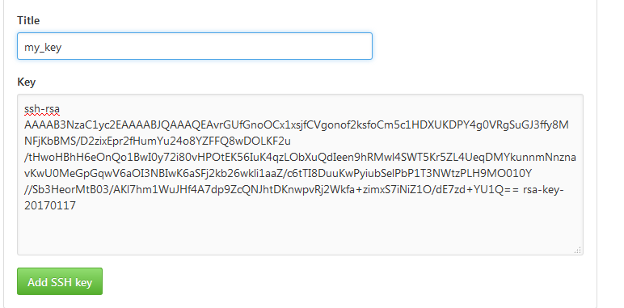
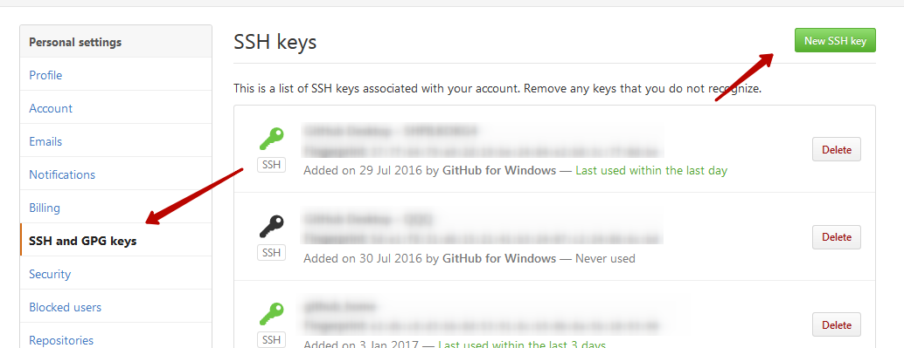
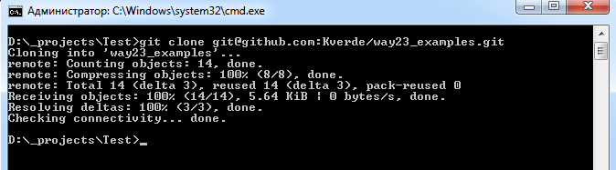

Работа с GitHub по SSH
Для работы Githubopen in new window я использую GUI приложение от Githubopen in new window и консольный клиент. В этой заметке речь пойдет о втором варианте, а именно о настройке SSH, чтобы фиксировать код без ввода логина и пароля.
Скачиваем и устанавливаем Gitopen in new window.
Генерация ключа
Для генерации ключа воспользуемся PUTTYGEN.EXEopen in new window. Принцип тот же что и для подключения к серверуopen in new window - приватный ключ на машине которая подключается к GitHub, публичный ключ в GitHub.
Если ключа еще нет то генерируем его, если он уже создан раньше то загружаем.

Сохранение приватного ключа
Импортируем ключ в формат OpenSSH. Сохранить полученный файл нужно под именем .ssh\id_rsa в каталоге пользователя.

Пример полного пути к id_rsa C:\Users\QQQ\.ssh\id_rsa
Ключ в файле с таким именем используется для подключения по SSH по умолчанию. В случае если ключей несколько для разных серверов, потребуется дополнительная настройка - используется файл .ssh\config.
Загрузка публичного ключа на GitHub
Копируем публичный ключ из текстового поля PUTTYGEN

Заходим в настройки GitHub пункт SSH and GPG keys. Нажимаем New SSH key.


Запускаем консоль и клонируем репозиторий
git clone git@github.com:Kverde/way23_examples.git
